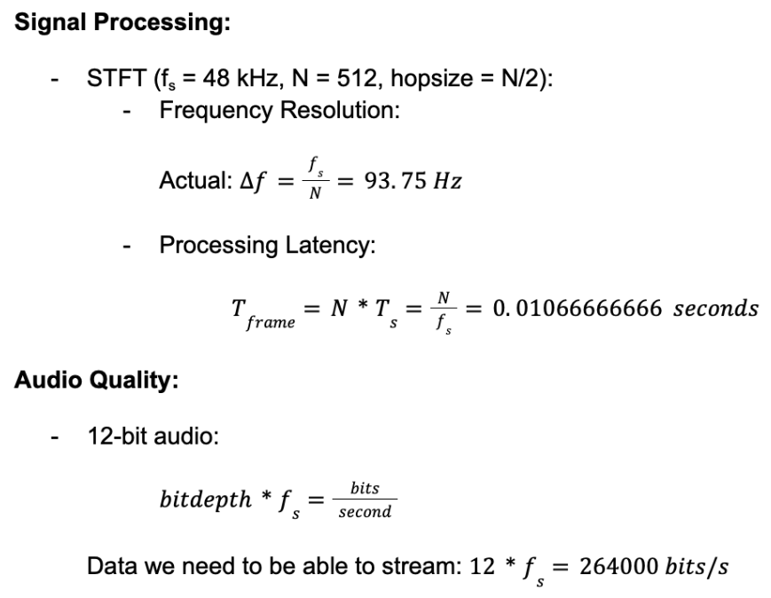
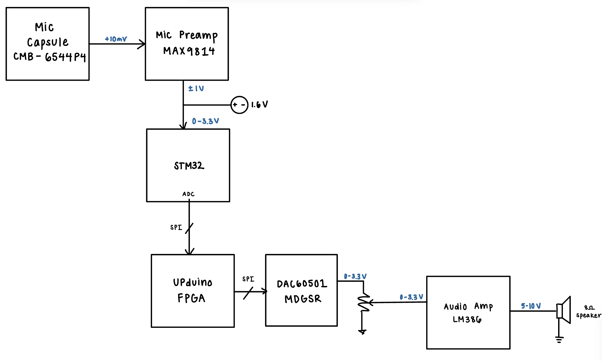

Project Proposal
Project Descripion & Overview
We propose to design and implement an autotuning microphone. The system will record a user’s singing voice using a microphone, which is captured using a button to indicate the end of recording. The system will then detect its pitch and shift it toward the nearest note using FPGA-based audio processing.
Specifications for Design
- The system captures microphone input through the MCU’s ADC at a sample rate of 48 kHz.
- The system uses an external DAC to output processed audio from the FPGA.
- Audio data is transferred between the MCU and FPGA using the SPI protocol with no dropped samples.
- The FPGA performs pitch detection and correction.
- The autotune output is within ±1% of the target pitch frequency.
- The output of the system starts playing one second after the user is finished speaking.
Riskiest Element
The riskiest element of this project is the analog input, or receive chain. This is challenging because it is highly dependent on the test environment—even if the system receives the same analog input, receiving this in a quiet lab will produce a different output as compared to receiving it in a bustling lab with lots of background noise. This is because background noise in the lab will add unwanted peaks and troughs in the frequency spectrum, and since the FFT analyzes all the sound captured by the microphone, the results could include inaccurate amplitude readings for the actual signal’s frequency components. In order to debug our system itself, we could include an audio jack before entering the preamp, which would allow us to step around the microphone and provide another input to test the system functionality.
FPGA Design Details
To implement the design on the UPduino FPGA, we’ll create a system in SystemVerilog that processes a stream of audio data. Incoming audio samples received via SPI, processed, then fed into a buffer that’ll allow us to process the next chunk of data while the previous is outputted. An STFT will grab chunks of the sample data, apply a Hanning window in order to account for discontinuities, then perform an FFT and utilize HPS (Harmonic Product Spectrum) to find the fundamental frequency. The pitch will be corrected via the phase vocoder method, an inverse FFT (iFFT) will be performed to bring the data back into the time domain, and the overlap-add (OLA) method will be used in order to reconstruct the final signal. The final signal will be sent to the external DAC, which will then send the signal to the audio amplifier and eventually be outputted.
In this design, we will make use of the FPGA’s dedicated DSP multipliers, which is an FPGA functionality previously not covered in labs. This will be done to efficiently perform fixed-point arithmetic operations and is required for the FFT, windowing, and overlap-add steps. Using these DSP resources allows us to offload intensive multiply–accumulate operations from general logic, enabling higher throughput, lower latency, and better utilization of the FPGA fabric for real-time digital signal processing.
MCU Design Details
The microcontroller serves as the interface between the analog audio and the FPGA’s digital signal processing. It will perform the ADC conversion by sampling the incoming microphone data at 48 kHz. The MCU will also manage the data transfer with the FPGA over an SPI protocol. The audio samples captured by the ADC are saved in SRAM buffers before being transferred to the FPGA. This should be continuous and synchronized audio steaming.
External Hardware Details
The piece of nontrivial external hardware we will be using is a DAC60501MDGSR, which is a single channel 12-bit DAC. It is SPI compatible up to 50 MHz. We will be communicating with the DAC over SPI to convert the digital output signal from the FPGA to an analog input for the audio amplifier and speaker. Other external hardware we are using is a microphone preamplifier with automatic gain control (AGC) and low-noise microphone bias. It amplifies the signal from the microphone to a level the STM32 can digitize reliably. The device provides three selectable gain settings of 40 dB, 50 dB, or 60 dB, with the AGC circuitry automatically adjusting gain to prevent clipping on loud inputs while keeping softer inputs audible. The chip also provides a built-in 2 V bias to power the microphone, which reduces extra components and helps keep the signal clean for accurate pitch detection.
Calculations for System’s Performance

Block Diagram

Project Schedule
To create a work breakdown for this project, we created this Gantt Chart, which details the steps needed to be done for all components of the system. These steps are broken down to all the team members and are also divided to cover the remaining four weeks of the course.
Budget Details
This BOM contains all the parts needed for this project, including the part number, datasheet, quantity, and price, ensuring that we are staying below the maximum $50 budget for this project.